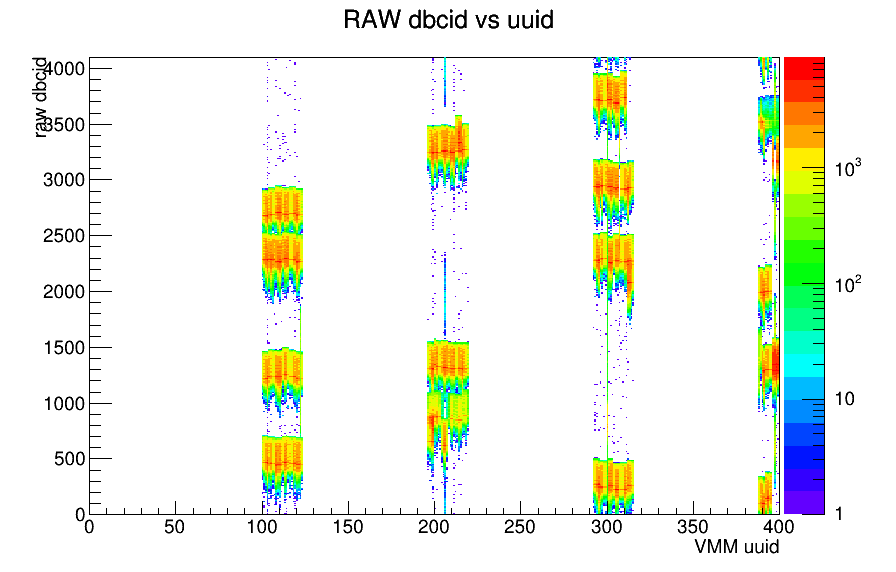
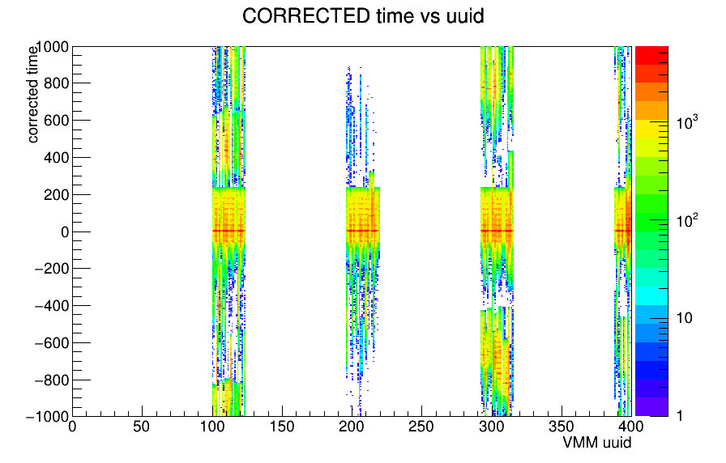
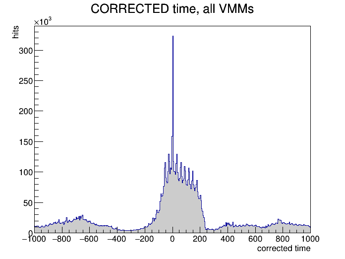
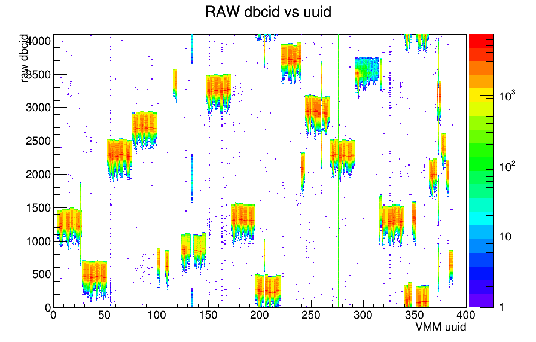
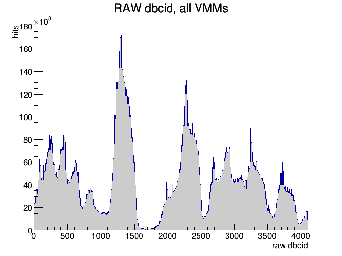
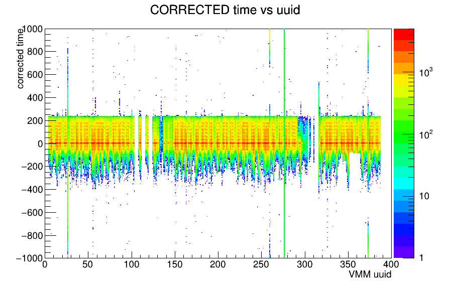
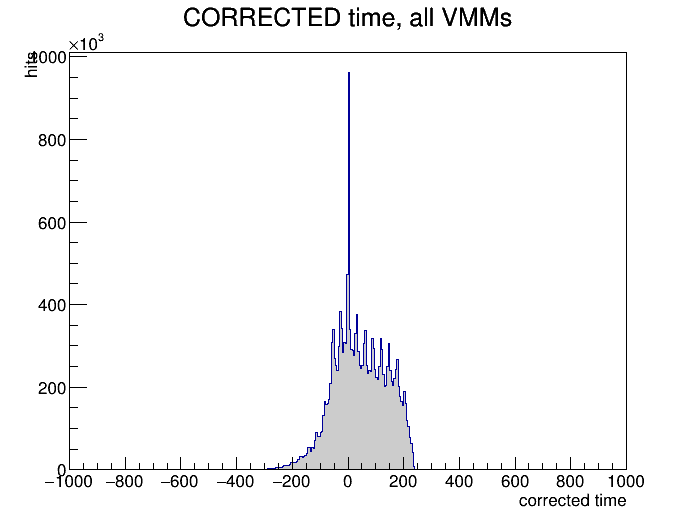
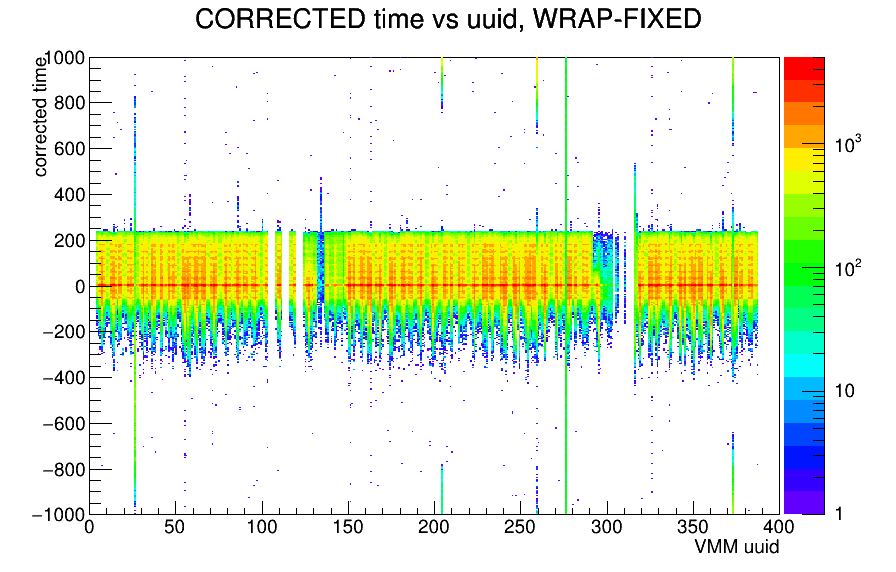
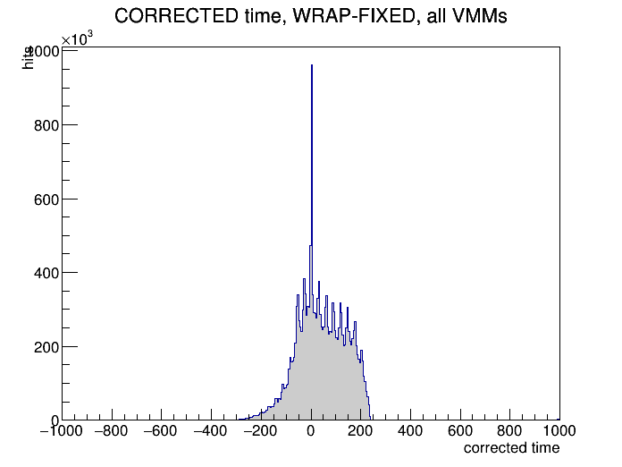

(quadrants merged)
{kind=link}


{kind=link}

{kind=link}

(real quadrants)
{kind=link}

{kind=link}

{kind=link}

{kind=link}

WRAP-FIXED
same as FIXED row)
{kind=link}

{kind=link}

← back to StFttSimHitMaker main page
UShort_t fob = (UShort_t)mFttDb->fob( rawHit ); UShort_t uuid = rawHit->vmm() + ( StFttDb::nVMMPerFob * fob );confirmed identical, line for line, to what's actually used to key the real per-channel calibration (StRoot/StFttHitCalibMaker/StFttHitCalibMaker.cxx:103-104) -- not a separate/approximate indexing scheme.
Bug found and fixed (2026-07-22): StFttDb::quadrant() checked its "already mapped" sentinel against the wrong constant, so the fallback to the real quadrant never fired -- the per-VMM time-calibration anchor (computed earlier in the chain than hardware mapping runs) silently merged all 4 quadrants sharing a (plane,feb,vmm) into one shared anchor:
- if ( hit->quadrant() < nQuad ) // nQuad=16 (total, all 4 planes) -- wrong bound
+ if ( hit->quadrant() < nQuadPerPlane ) // =4, matches StFttDb::plane()'s own check
return hit->quadrant();
return hit->rdo() - 1;
Separately found and also fixed: HitCalibHelper::time() did dbcid - dbcidAnchor[uuid] with no handling for dbcid's 12-bit (4096) rollover -- a channel whose true peak sits near the 0/4095 edge got split into two disconnected sub-peaks by the naive subtraction. Now wraps to the shortest signed distance. The 3rd row below shows this fix on top of the quadrant fix.
Same file, same 2000 events, same code otherwise -- only StFttDb::quadrant() differs between the two rows.
| RAW dbcid vs uuid (2D) | RAW dbcid, Y-proj (1D) | CORRECTED time vs uuid (2D) | CORRECTED time, Y-proj (1D) | |
|---|---|---|---|---|
| BUG (quadrants merged) |
 |
|
 |
 |
| FIXED (real quadrants) |
 |
 |
 |
 |
| FIXED + WRAP-FIXED |
(raw dbcid unaffected -- same as FIXED row) |
(same as FIXED row) |  |
 |
HitCalibHelper's self-calibrating anchor is dbcidAnchor[uuid] = mode-of-histogram. Under the bug, that histogram was the SUM of up to 4 real quadrants' distributions sharing a (plane,feb,vmm). Checked directly (script/checkQuadrantMergeEffect.C, feb=0/vmm=0, all 4 planes, bypassing the bug by using hit->sector()/rdo() directly for ground truth):
| plane | quadA peak (n) | quadB peak (n) | quadC peak (n) | quadD peak (n) | buggy merged peak (n) | winner |
|---|---|---|---|---|---|---|
| 0 | 1218 (23,036) | 468 (20,969) | 2287 (29,672) | 2674 (26,199) | 2287 (99,876) | C |
| 1 | 658 (21,999) | 866 (17,922) | 3247 (24,573) | 1307 (23,033) | 3247 (87,527) | C |
| 2 | 262 (23,107) | 3713 (22,902) | 2939 (29,760) | 2272 (24,010) | 2939 (99,779) | C |
| 3 | 3511 (12,102) | 1398 (26,970) | 99 (27,794) | 1982 (26,206) | 99 (93,072) | C |
Not random pickup -- deterministic "highest-occupancy quadrant wins." Quadrant C has the most raw hits of the 4 in all 4 planes for this feb/vmm, and the merged anchor lands exactly on quadC's own peak every time. Quadrants A/B/D silently get corrected against quadC's anchor instead of their own, offset by anywhere from a few hundred to ~2000 dbcid units -- the direct source of the secondary bumps around ±700-800 in the buggy 1D plot above (the aggregate, across all feb/vmm/plane slices, of many individual offsets like these). Caveat: dbcid is a bounded 12-bit counter, so very large naive peak differences near the 0/4095 edge could in principle reflect wraparound rather than a true offset -- doesn't change the qualitative conclusion.
Checked directly: hit->time() (the value this bug corrupts) is read in exactly two places in the whole repo, both inside StFttClusterMaker::PassTimeCut()'s kTimeCutModeDB/kTimeCutModeCalibratedTime branches -- both unreachable when mTimeCutMode == kTimeCutModeAcceptAll, which returns true immediately without ever touching hit->time(). Since production defaulted to AcceptAll until this session's time-cut investigation changed it, this bug was silently dormant in all prior production running -- no real signal was ever lost to it, because nothing was ever cut on the value it corrupts.